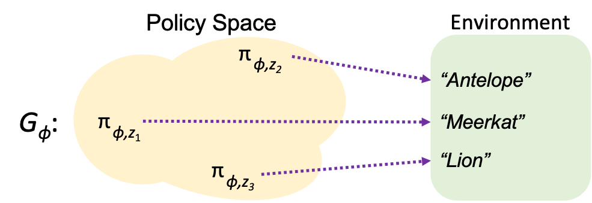
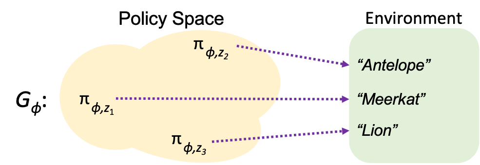

Overview
Learn not one, but many, ways to succeed in an environment - while still using shared weights.

Use this policy space to quickly adapt to unexpected ablations or adversaries.
Learn not one, but many, ways to succeed in an environment - while still using shared weights.

Use this policy space to quickly adapt to unexpected ablations or adversaries.


Oscillate 1: B can go up and around the bot A, rather than charging through A's defense.
Stand: B simply needs to deterministically move towards the non-guarded square. We've noticed that ADAP tends to be more committed, whereas the Vanilla baseline may attempt some fake-out moves. A more committed approach is better, since it reduces the chance that the game ends in a draw before scoring.
Straight: A will deterministically move right, so if B is able to stand in front of A, possession will switch (indicated by the star) and B can sneak around A into the goal. In some cases of the Vanilla rollout, Vanilla remains stuck behind A, rather than sneaking out and around.